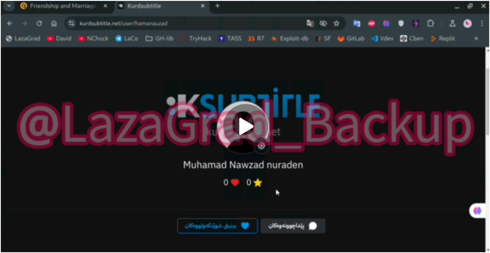

Two accounts on the Kurdish website kurdisubtitle HACKED
2024-1-11
LHT News
As part of a series of continuous cyber attacks, the Lazagrad Hack team announced that it had carried out a successful hacking operation targeting KurdiSubtitle, one of the most prominent sites specialized in translating and showing films and series in the Kurdistan Region. The team managed to hack two active accounts on the site and close them completely. Details of the hacking process, according to the team's statement, a precise operation was carried out that led to the hacking of two influential accounts on the Kurdisubtitle platform, which caused them to be disabled and out of service. The team did not reveal the nature of the targeted accounts or the information accessed, but the process reflects the team's ability to exploit the security holes in the websites.

Possible motives behind the attack The motives for targeting Kurdisubtitle were not officially disclosed, but this step comes as part of a systematic campaign carried out by the Lazagrad Hack team against websites in the region. This process is likely to be aimed at: to show the team's cyber power by targeting sites of wide popularity. Expose the security loopholes on the websites and push their management to strengthen their security systems. Sending warning messages to media or cultural organizations that are believed to be collaborating with hostile parties.

The expected feedback so far, the Kurdisubtitle administration has not issued any official statement detailing the incident or the steps to be taken to address the situation. However, the administration is expected to: conduct a comprehensive security review of the site's technical system. Warn users of any electronic phishing or account exploitation attempts. Strengthening security systems and activating additional protection measures to avoid recurrence of such incidents. The importance of enhancing cybersecurity for websites This incident highlights the urgent need to enhance the electronic protection of popular sites. Recreational and cultural sites have become potential targets for cyber attacks that may disrupt services or leak data. The conclusion of the hacking operation that targeted KurdiSubtitle confirms that cyber threats have become more complex and widespread. Website management has to move quickly to secure its platform and protect its users from any potential attacks. The question remains: Will KurdiSubtitle succeed in tackling such future attacks?
 EN
EN